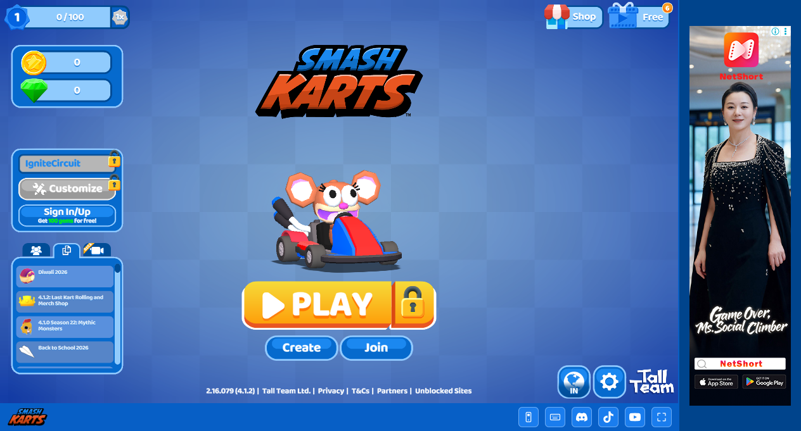
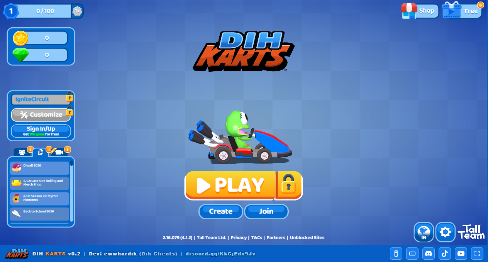
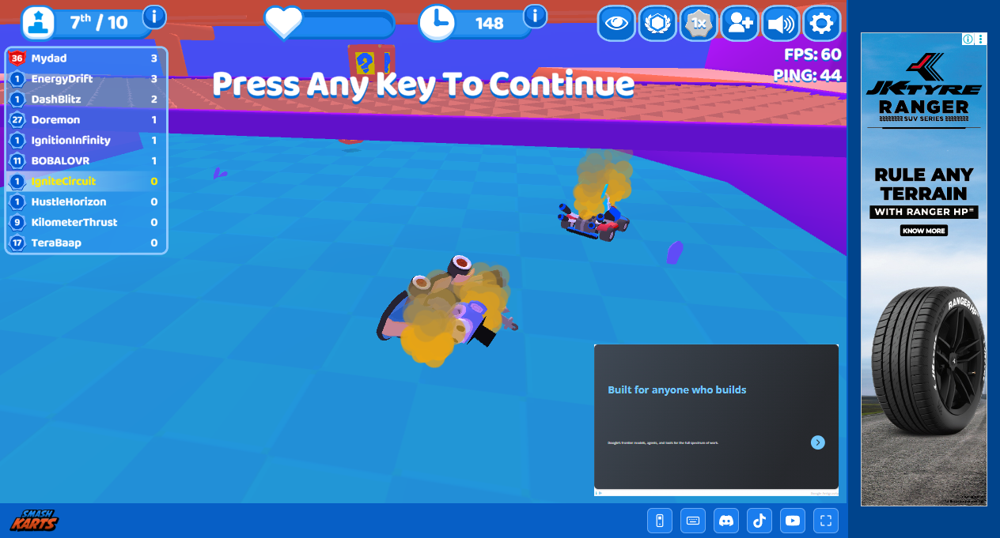
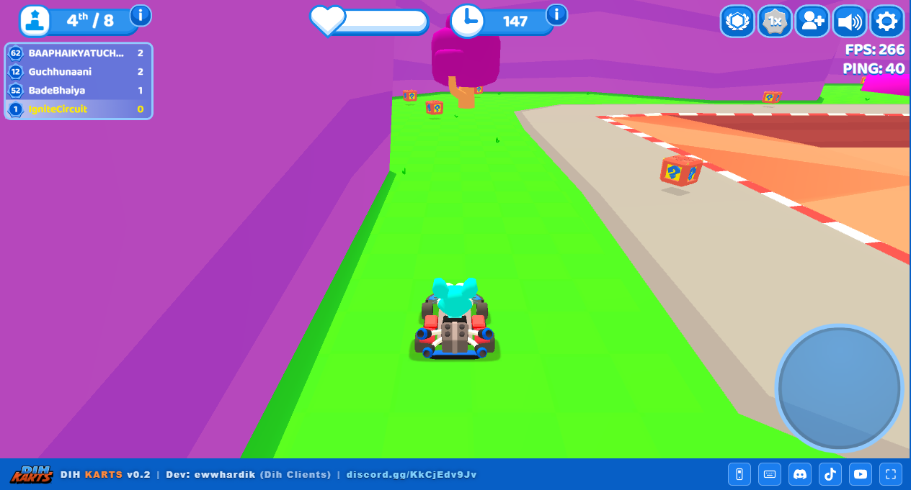
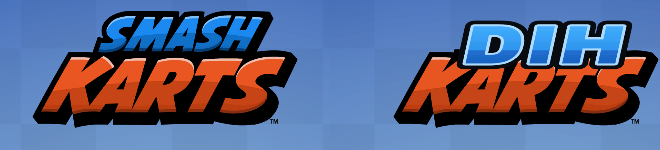

Before & After
Main menu


In a match


The details


Features
Uncapped FPS
Chromium's frame limit and VSync are lifted and the renderer is never throttled. 177–266 FPS measured on a 60 Hz screen.
Real in-game counter
The game clamps its counter to 60. We patch that one constant in memory, so the original-looking counter shows the real number.
Logo inside the game
The Dih Karts logo replaces the menu, loading and bar logos. The patch checks the game's texture signature and skips itself if it changes.
Ad blocker
Ghostery engine with EasyList, EasyPrivacy and Fanboy lists. The ad panel is gone and the game stretches full width.
Networking
DNS-over-HTTPS, QUIC, pre-warmed connections and no background pings. Faster connection setup; it cannot change server ping.
FPS limiter & render scale
Cycle 240/165/144/120/60 FPS with F6 and 1.0/0.75/0.5/1.25× resolution with F7.
Fullscreen & memory
F11 fullscreen. Remembers window size, position and fullscreen state.
Light
Trimmed Electron build — about 112 MB zipped, portable, no installer.
Community
Every Discord button in the game points to the Dih Clients server.
Hotkeys
| Key | Action |
|---|---|
| F11 | Fullscreen |
| F5 | Reload |
| F6 | Cycle FPS limit |
| F7 | Cycle render scale |
| F8 | Toggle watermark |
| Ctrl+Shift+I | DevTools |
Install
1. Download DihKarts-win-x64.zip from the latest release.
2. Extract it anywhere and run Dih Karts.exe. No installation needed.